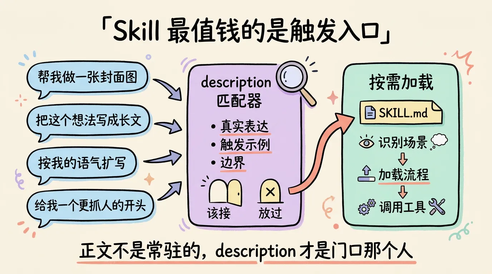
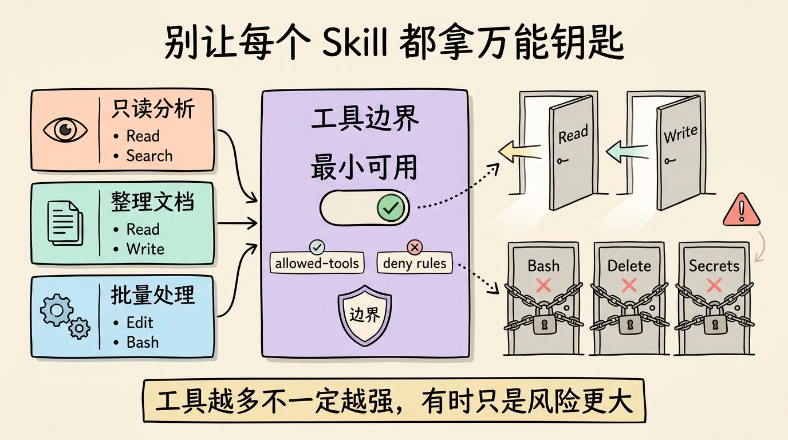
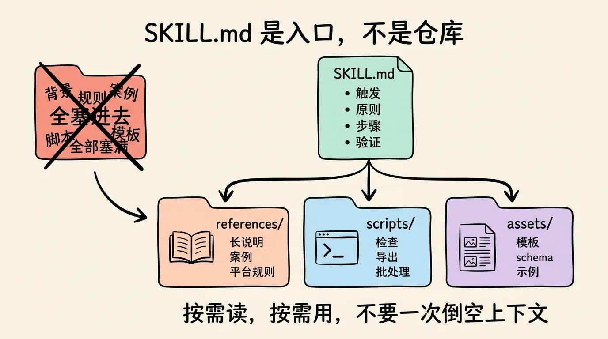
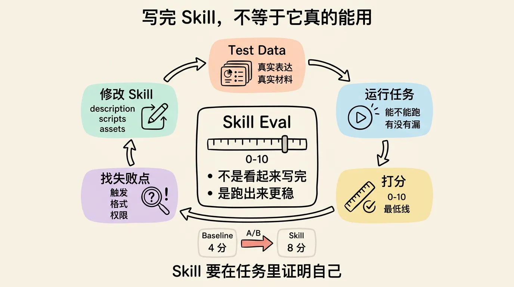

一篇讲透，如何写出工业级 Skill
这两天看到一篇讲 Skill 的长文，我读完之后，脑子里一直冒出一个很朴素的判断。
很多人其实不是在写 Skill。
是在写一份更长的 Prompt。
这件事挺微妙的。因为从表面看，它们确实很像。都是一个 Markdown 文件，里面写背景、规则、步骤、注意事项、示例输出。你把东西塞得越满，看起来就越专业，越像是把经验沉淀下来了。
但真的用起来，很快就会发现不对。
一个臃肿的 Prompt，解决的是这一次对话里怎么让模型听话。
一个好的 Skill，解决的是以后每次遇到类似任务时，Agent 能不能自己识别场景，自己加载流程，自己调用合适的工具，最终稳定地把事情做完。
这里面差别很大。
大到它决定了你是在给 AI 写说明书，还是在给 AI 搭工作流。
我以前也会犯这个问题。看到一个任务经常重复，就很自然地想，把所有经验全写进去吧。什么背景信息、失败案例、风格偏好、命名规则、目录结构、输出模板，一股脑全塞进 SKILL.md。
写完还挺有成就感。
像修了一本厚厚的操作手册。
但后来用多了才发现，厚不等于稳。很多时候，Skill 越写越长，不是因为它更专业，而是因为边界没想清楚。
真正工业级的 Skill，第一件事不是内容多。
是触发准。
一、Skill 不是常驻提示词，它最值钱的是触发入口
Skill 和 CLAUDE.md 不是一类东西。
CLAUDE.md 更像项目里的常驻上下文。你只要在这个项目里工作，它就一直在那里，持续影响模型怎么理解代码库、怎么写代码、怎么遵守项目习惯。
slash command 又是另一类东西。它更像手动按钮。用户必须明确输入某个命令，Agent 才知道接下来要走那条流程。
Skill 夹在中间。
它不是一直完整塞进上下文里，也不是完全靠用户手动点名。它更像一个按需出现的工作流。平时安静地待在那里，等用户的需求和它的 description 匹配上，再把完整内容加载进来。
这个设计其实非常关键。
因为 Skill 的正文不是常驻的，但 description 会长期参与匹配。
所以，一个 Skill 能不能被正确调用，很多时候不是正文写得够不够长，而是 description 写得够不够像真实用户会说的话。
你做一个封面图 Skill，如果 description 只写一句 Create an image，看起来简洁，但很可能不好用。
因为用户不会这么说。
用户会说，帮我做一张封面图，给这篇文章配个图，按这个标题做一张科技感海报，做一张适合小红书的封面，给 X 长文生成一张头图。
这些话才是入口。
再比如写 X 长文的 Skill，用户也未必会说，请调用 article skill。真实表达更可能是，把这个想法展开成一篇长推，帮我写一条长内容，按我的语气扩写一下，给我一个开头更抓人的版本。
你想想看，如果这些真实表达没有进入 description 或触发示例，Skill 明明存在，但 Agent 可能根本不会想起它。
这就是很多 Skill 不好用的第一层原因。
不是流程不行。
是门没开对。
所以写 Skill 时，第一个问题不该是，我要告诉模型什么。
而是，用户说出哪些话时，这个 Skill 应该出现。
这个问题一变，整个写法都会变。你会开始收集真实表达，而不是只写抽象能力。你会开始描述边界，而不是只堆功能。你会开始考虑误触发，而不是默认越宽越好。
说真的，一个成熟的 Skill，应该很像一个训练过的前台。
该接的人要接进来，不该接的人要礼貌放过。
如果什么需求都想接，最终就会变成谁也服务不好。

二、该自动出现的自动出现，不该常驻的就降级成命令
很多人一装 Skill，就希望它自动触发。
这很正常。自动触发听起来很爽，好像只要把 Skill 放在那里，以后所有类似任务都会自己变好。
但这里有个很现实的成本。
自动触发类 Skill，至少要让 description 长期参与匹配。Skill 越多，描述越长，常驻的匹配成本就越高。单个 Skill 看起来没什么，几十个、上百个叠在一起，就会开始吃上下文，吃注意力，也增加误触发概率。
所以不是所有 Skill 都应该自动出现。
有些 Skill 高频、短小、边界清晰，非常适合自动触发。比如代码审查、文章翻译、图片压缩、Markdown 格式化。这些需求的用户表达相对稳定，出现频率也高，自动加载收益很明显。
但有些 Skill 很专业，很长，一年用不了几次。
年终总结 Skill。
简历重写 Skill。
课程讲义整理 Skill。
某个特定平台的发布 Skill。
这类东西就未必要一直占用自动匹配资源。更合理的做法，是把它降级成手动命令，需要时再叫出来。
这不丢人。
相反，这是一种系统设计意识。
工具不一定越主动越好。有些工具就应该放在抽屉里，用的时候拿出来。你不会把扳手一直握在手上吃饭，也不会让电钻每天在桌面上待命。
回到 Skill 也是一样。
自动触发的优点，是省心，像一个会自己站出来的助手。缺点，是会消耗匹配成本，也可能在模糊场景里抢活。
手动调用的优点，是省上下文，边界干净，误触发少。缺点，是用户必须记得它的存在。
怎么选，取决于使用频率、触发表达是否稳定、正文是否很长、误触发成本是否高。
这几个问题想清楚了，你的 Skill 系统才不会越装越乱。
三、工具权限要想清楚，别让每个 Skill 都拿万能钥匙
我特别喜欢原文里提到的一个点，Skill 需要认真处理工具边界。
这个点很容易被忽略。
很多人写 Skill，只关心模型该怎么想，不关心它能干什么。结果就是一个只负责分析建议的 Skill，也默认能改文件。一个只需要读材料的 Skill，也能执行命令。一个生成标题的 Skill，顺手拿到了写入权限。
这听起来好像问题不大，反正模型会听话。
但说真的，工程里不能靠听话做安全边界。
这里要稍微讲细一点。
在 Claude Code 里，allowed-tools 更准确地说是预批准工具。它让某个 Skill 激活时，可以不再反复询问你，直接使用这些工具。它不是硬性的禁止列表，不代表其他工具完全不能被调用。
真正要禁止某些工具，还要配合权限规则里的 deny。
但这不影响这个原则。
Skill 的工具配置，应该按最小可用思路来设计。
只是读材料，那就给读权限。
需要整理文档，那就给读写权限。
需要批量处理文件，再考虑编辑和命令执行。
需要生成图片，就给读参考资料、写 prompt、调用图片工具的能力。
别一上来就把所有工具都预批准给它。
工具越多，不一定越强，很多时候只是风险越大。
尤其是 Claude Code 这种能直接读写文件、运行命令、提交修改的环境，工具权限不是装饰项。它决定了这个 Skill 在执行时有多顺滑，也决定了它出错时可能造成多大影响。
我自己的感受是，写 Skill 时可以把它当成一个新人同事来配权限。
你不会因为一个同事要帮你改一段文案，就给他生产数据库权限。你也不会因为他要整理资料，就默认允许他跑任意脚本。
Agent 也一样。
它越能干，越要有边界。
这不是不信任模型，而是尊重系统。

四、模型选择不是玄学，是成本和可靠性的平衡
还有一个经常被忽略的地方，Skill 也可以指定模型。
很多人的默认做法是，所有 Skill 都用当前会话的模型。强模型也好，便宜模型也好，反正统一继承。
这当然省事。
但不一定合理。
不同 Skill 对模型能力的要求差别非常大。写长文、做视觉设计、整理笔记、跑数据分析、爬取网页、格式化 Markdown、改简历，这些任务其实不该默认用同一个模型。
有些任务需要强表达。比如长文写作，它考验结构、节奏、语气、判断力，还要能在材料里挑出真正重要的东西。这种任务，用写作能力更强的模型是值得的。
有些任务需要视觉理解。比如封面图、插图、设计稿分析，它需要多模态能力和审美判断。
有些任务只是稳定抽取。比如从网页里提取标题、作者、发布时间、正文摘要，未必需要最贵的模型。便宜快的模型，配上明确模板，可能反而更合适。
还有些任务是确定性操作。比如检查图片尺寸、批量改文件名、导出多平台版本，这种东西让脚本做，比让强模型现场发挥稳定得多。
这背后的原则很简单。
不是所有任务都值得调用最强模型，也不是所有任务都能交给便宜模型。
工业级 Skill 系统要做的，是把不同任务放到合适的执行层上。该用强模型时别省，该用脚本时别装，该用便宜模型时也别浪费。
这就像团队分工。
你不会让架构师每天手动改一百个文件名，也不会让实习生独立决定公司核心产品方向。
Skill 里的模型选择，本质就是这种分工。
五、SKILL.md 应该像入口文件，不该像资料仓库
如果一个 Skill 的正文越来越长，长到你自己都不想读，大概率说明它开始变形了。
很多人会把所有东西塞进 SKILL.md。
触发说明放里面。
执行步骤放里面。
参考资料放里面。
几十个案例放里面。
脚本片段放里面。
输出模板也放里面。
看起来很完整，但代价是非常直接的。Skill 一旦被触发，整坨内容都进上下文。模型要读更久，响应变慢，注意力被稀释，复杂任务里还可能更早触发压缩，前面重要信息被挤掉。
这就是为什么我越来越觉得，SKILL.md 不应该是仓库。
它应该是入口文件。
里面只放几类东西就够了，什么时候触发，做事原则，执行步骤，需要哪些工具，详细资料在哪里，收尾怎么验证。
长参考资料放到 references/。
稳定脚本放到 scripts/。
模板、schema、示例文件放到 assets/。
这样 Agent 每次只先读入口。真需要平台尺寸，再去读平台尺寸文档。真需要批量导出，再去跑脚本。真需要输出模板，再打开对应资产。
这就是渐进式披露。
按需读，按需用。
不要一上来把全部家当倒在模型面前。
我觉得这个设计非常像软件工程里的模块化。你写一个程序，也不会把所有函数、配置、测试数据、图片资源都塞进一个文件里。你会拆目录，会定义入口，会把确定性操作做成脚本，会把大型参考材料放到单独文件。
Skill 也是软件。
只是它运行在 Agent 的注意力里。
所以 SKILL.md 太长时，别急着继续压缩措辞。先问自己，哪些内容其实应该被拆出去。
长说明移到 references/。
稳定操作写成 scripts/。
模板样例放到 assets/。
主文件只保留路线图。
这一步做完，Skill 往往会立刻变清爽。

六、写完不算完成，跑过 eval 才知道它有没有用
这可能是最容易被跳过的一步。
很多 Skill 写完之后，会给人一种已经完成的错觉。文件在了，规则有了，示例也写了，好像它就可以交付了。
但 Skill 真正的问题不是写没写完。
是它在真实任务里有没有变好。
我觉得至少要测三层。
第一层，能不能跑。
路径对不对，引用文件能不能读到，脚本能不能执行，工具权限够不够，输出格式是不是符合预期，关键步骤有没有漏。
这层很朴素，但很重要。一个 Skill 如果连真实任务都跑不通，后面讨论触发和质量都是空的。
第二层，能不能正确触发。
这一步不能只测用户说，请运行某某 Skill。
真实用户不会这么说。
你要准备一组真实表达。比如写长文 Skill，就测，把这个想法展开成一篇长推，按我的语气扩写一下，给我写一篇 X 长文，帮我把这个观点改成更抓人的版本。
如果该触发的不触发，说明 description 太窄。
如果不该触发的触发了，说明边界太宽。
这一步测的是入口。
入口不准，正文再漂亮也没用。
第三层，结果有没有变好。
这才是最关键的。
同一个任务，不用 Skill 跑一遍，用 Skill 跑一遍，然后打分。不是凭感觉说不错，而是看它有没有减少错误，有没有更符合用户预期，有没有让输出下限更稳。
可以很简单，0 到 10 分。
0 到 2 分，方向错了。
3 到 4 分，勉强相关，但漏掉关键要求。
5 到 6 分，基本可用，但问题明显。
7 到 8 分，质量稳定，细节可改。
9 到 10 分，可以当示范。
不用把 eval 搞得像科研论文那么复杂，但一定要有样本，有标准，有失败记录。
比如封面图 Skill，就准备几个不同类型的标题、内容摘要、平台尺寸、参考风格，看看它能不能稳定生成合适 prompt。
比如文章写作 Skill，就准备几条原始想法、目标读者、理想语气，看看它能不能写出接近你风格的成稿。
比如简历改写 Skill，就准备不同岗位 JD、原始简历、修改目标，看看它是不是只会堆关键词，还是能真的做取舍。
最有价值的是 baseline 对比。
同一个任务，不启用 Skill 是 4 分，启用 Skill 是 8 分，这才说明 Skill 把经验固化进去了。
如果不用 Skill 是 7 分，用了还是 7 分，那它可能只是一个看起来很漂亮的提示词仓库。
没有带来增益。
这句话有点残酷，但很必要。
Skill 不是写给作者自我感动的。它要在任务里证明自己。

七、失败记录比成功案例更值钱
写 Skill 最容易写成功路径。
用户提出需求，Agent 加载 Skill，按步骤执行，产出结果，完美收工。
但真实世界不是这样。
真实世界里，用户表达会很含糊，文件路径会不对，工具权限会缺，脚本会失败，参考资料会过期，模型会误解任务，输出格式会飘。
所以一个好 Skill，不只要写怎么成功，还要写失败时怎么自救。
触发失败，就补真实表达。
误触发，就收窄边界。
步骤漏掉，就改主流程。
输出格式飘，就把样例放进 assets/。
确定性检查不稳，就写脚本。
参考资料太长，就拆到 references/。
权限不够，就补工具。
权限太大，就收紧。
模型能力不够，就换模型。
然后再跑一轮。
这个闭环才是工业级 Skill 的核心。
写 Skill，准备测试样本，运行 eval，逐项打分，定位失败原因，修改 Skill，再跑 eval。直到主要场景都过线，或者至少知道它的边界在哪里。
我现在越来越觉得，Skill 的失败案例比成功案例更重要。
成功案例很容易让人兴奋，但失败案例才会让系统变稳。每记录一个失败点，你就知道下一次该把经验固化在哪里。
这和写软件其实没什么区别。
没有测试的代码，你不敢随便改。
没有 eval 的 Skill，你也不知道它什么时候会坏。
写在最后
所以回到最开始那个问题。
一个好 Skill 到底应该是什么样？
我觉得不用讲得太玄。
它能被正确触发。
不该触发时保持安静。
工具权限足够，但不过度。
模型选择符合任务难度和成本。
SKILL.md 足够短，细节按需展开。
重要场景有测试样本，有 eval，有失败记录，有迭代闭环。
这些东西听起来都不性感。
但工业级这个词，本来就不是性感。
工业级不是写一段很聪明的 Prompt，让模型这一次表现惊艳。工业级是你把一套经验拆成入口、流程、工具、模型、资料、脚本、验证和迭代，让它以后反复遇到类似任务时，仍然能稳定工作。
这才是 Skill 和 Prompt 最大的区别。
Prompt 更像一句嘱咐。
Skill 更像一条生产线。
你不是在告诉模型，请你这次表现好一点。
你是在搭一个系统，让它以后没那么容易表现差。
这件事说起来不浪漫。
但真的有用。